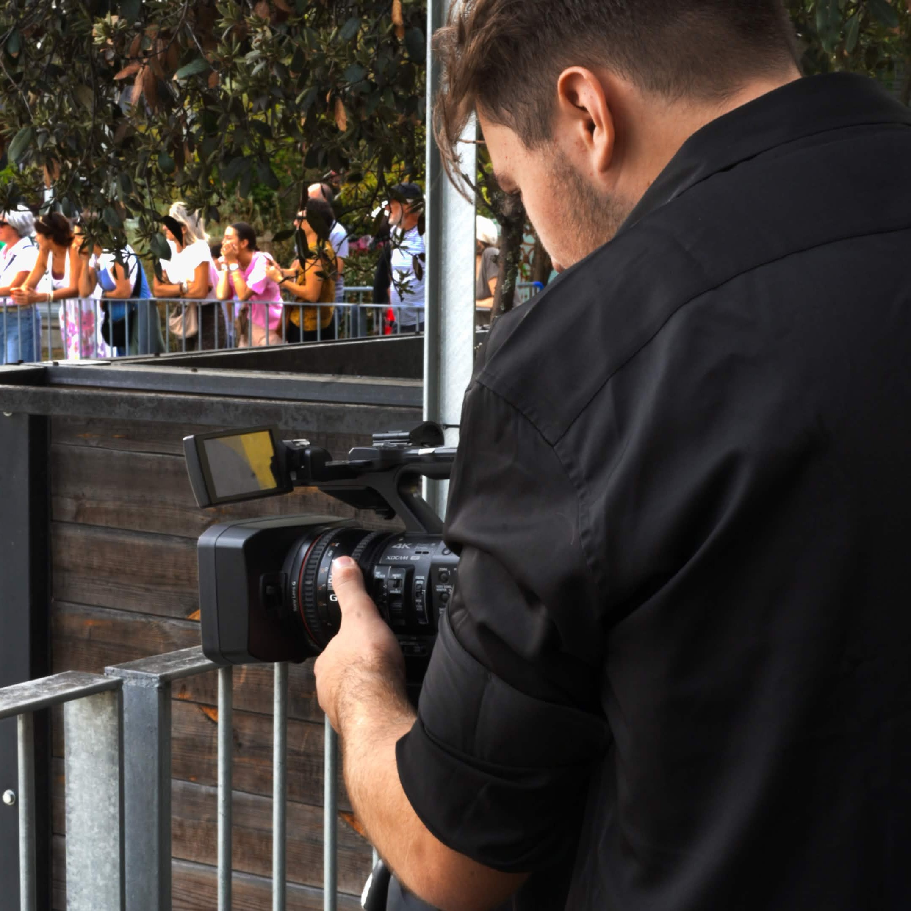

The Keeper
The Keeper est un Court Métrage en anglais ; 3 élèves, dont un français et 2 anglais, visitent une phares qui semble vide. Tout ne se passe pas comme prévu.
Étudiant polyvalent, passionné par le cinéma et les nouvelles technologies. Curieux et déterminé à mener à bien un projet audiovisuel.
The Keeper est un Court Métrage en anglais ; 3 élèves, dont un français et 2 anglais, visitent une phares qui semble vide. Tout ne se passe pas comme prévu.
Court métrage réalisé dans le cadre du 48h Challenge 3iS 2026
Thème : Invisible
Objet : Parapluie
Ligne imposée : "Am I supposed to like this?"
Parfois le reste du monde n'existe plus.
Il ne reste que l'instant, le silence et seulement nous.
Réalisé dans le cadre du Totem n°4 de 3iS où les élèves n'ont que 4 jours pour faire une court-métrage.
Thème : Sociologie et Narration
Contrainte : Voix Off
Machinima qui à gagné le concours de court-métrage BeamNG.Drive organisé par Steelorse
Thème : Sécurité Routière
Contrainte : Intégrer un image de cheval imposée

Dès l’instant où j’ai eu un ordinateur et une caméra entre les mains, j’ai voulu créer et partager. Ma curiosité m’a poussé à en apprendre toujours plus sur le montage et la réalisation.
Aujourd’hui, j’aime la sensation de donner vie à une œuvre audiovisuelle, sous toutes ses formes.
Étudiant en audiovisuel à 3iS, je recherche un stage ou une alternance pour 2027 en montage et cadrage afin de progresser au contact de professionnels et de mettre ma créativité au service de vos projets.
Une offre de stage ou d'alternance, un projet à tourner ? Contactes-moi, je réponds en 48 h.